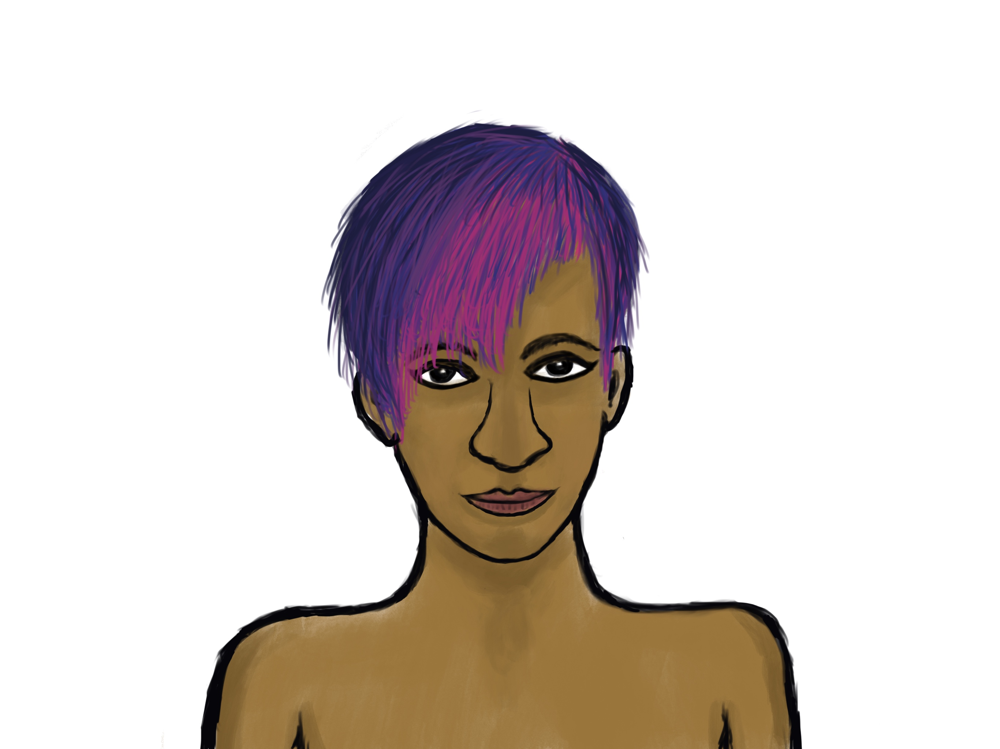

Sumu Tasib

Bio
Sumu (Su) Tasib is an author and scientist living in Seattle, Washington, and was selected as a 2023 Jack Straw Writer. A Boy Named Su is their first book, a collection of non-fiction stories and essays about their journey with genderqueerness. They are currently working on a collection of short stories and essays, many of which have appeared in the Seattle Erotic Arts Festival (SEAF) (2022, 2023, 2024, 2025, 2026) as well as in the Jack Straw Anthology 2023. Su's poetry stories and poetry received the SEAF Literary Editor's Choice Award in 2023 and 2026. Su was also invited to be a featured writer for SEAF 2024. Also in 2024, Su's poem "Bus Stop" was selected for 4Culture's Poetry in Public: Places of Landing project (formerly Poetry on Buses), appearing on trains and buses throughout that year.
Su's book can be found at the Elliott Bay Book Company and at amazon.com; selected chapters and other writings are also available on Medium. Su uses he/they pronouns.
Interviews and Media
- An interview with Priscilla Long for the Jack Straw Writer's Program.
- Author page for Sumu Tasib at Jack Straw.
- A short clip of the opening from my Jack Straw reading
- The full reading of "What If," my entry in the 2023 Jack Straw Anthology.
Contact
Su can be reached via email (sumu.tasib@gmail.com), facebook (sumu.tasib), or instagram (@sumu_tasib). Su is available for readings and talks/discussions on the gender spectrum; contact them directly for bookings.